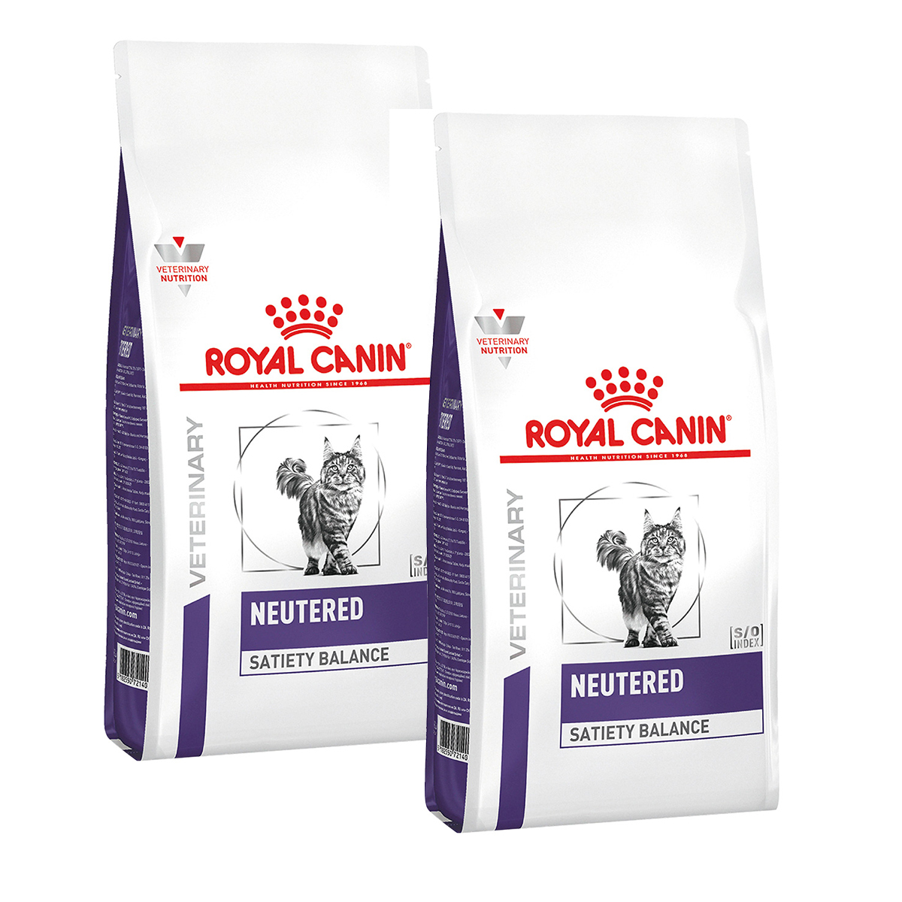
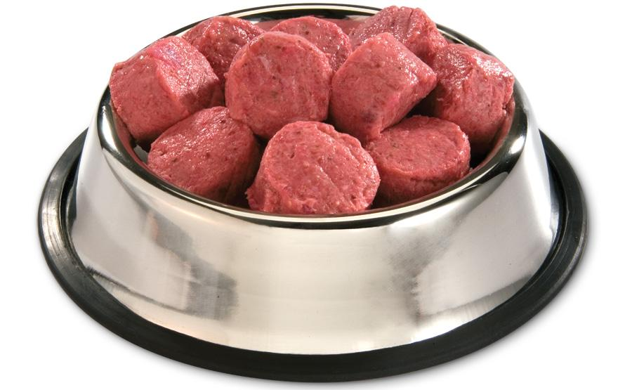
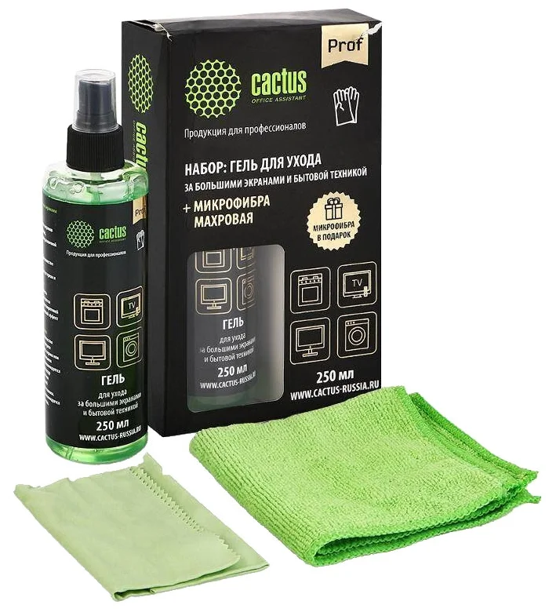
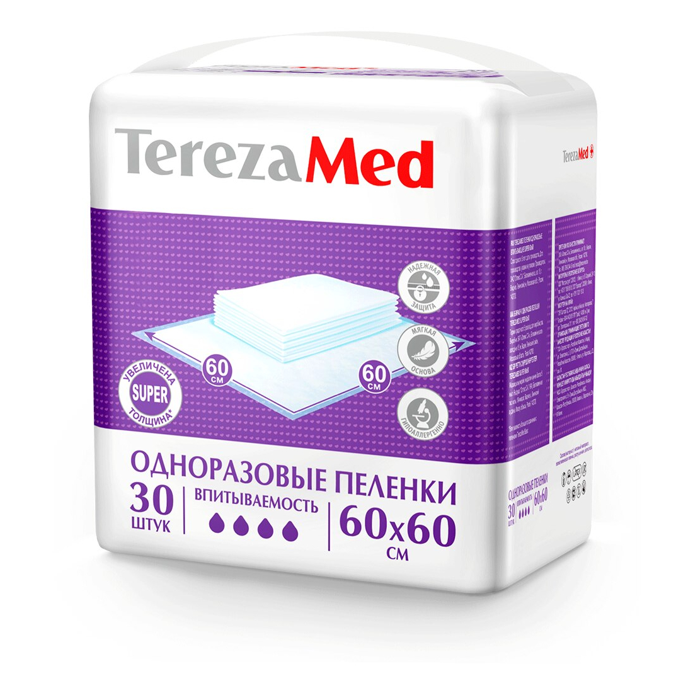

- Сухие корма для животных. Обычно мы покупаем для
собак сухой корм Chappi. Если бы была возможность, то приобретали бы корм Наша марка, Dog Chow.
Щенки
едят сухой корм для щенков Dog Chow. Кошечки едят сухой корм Pro plan elegant, консервы Pro plan
delicate, консервы Gourmet, консервы Royal Canin Gastro и лечебные сухие корма линейки Royal Canin
Gastro.
На Вискасах, китекетах и других "пустых" кормах животные долго не проживут, а животные приюта уже
имеют
заболевания и кушать такой корм не могут.


В зимний период уличные собаки переводятся с сухих кормов на горячее
питание. Необходимы мясопродукты и крупы:
- курица: грудная кость, головы, мышечные желудки, сердце, ноги, фарш
- говядина: обрезь, легкое и т.п
- рис, гречка, геркулес (хлопья), пшеничная и ячневая крупа
Свинину, пшено, перловую крупу нельзя.
- Текстиль. Подойдет б/у постельное белье, даже с дырочками и
заплатками,
но чистое. Одеяла, покрывала, пледы, неперьевые подушки, матрасы, трикотажные футболки, халаты,
полотенца. Тёплые вещи на подстилки: куртки, дубленки, плащи. Ковры, половики. Не принимаем брюки,
колготки, нательное бельё, носки, шарфы, шапки, детскую одежду.
- Чистящие средства типа пемолюкса, фейри, губки.
- влажные салфетки, одноразовые перчатки, резиновые перчатки, хозяйственные перчатки.
- мешки для мусора, либо строительные, либо плотные черные.


- Лекарства, весь список и не перечислить. Спрашивайте, уточняйте.
Всегда
остро необходимы: гепатоджект, гентамицин, анандин, цефтриаксон, комбилипен, нейромидин,
цианкобаламин
(вит.В12), натрия хлорид. Шприцы, бинты, ватные диски, ватные палочки, влажные салфетки, перекись
водорода, хлоргексидин, ихтиоловая мазь, офломелид, бранолиндовые повязки и т.п.
- Пеленки одноразовые. Подгузники для животных, либо подгузники
детские:
на 2-5 кг, на 7-14 кг. Расход всегда большой, актуально постоянно.
